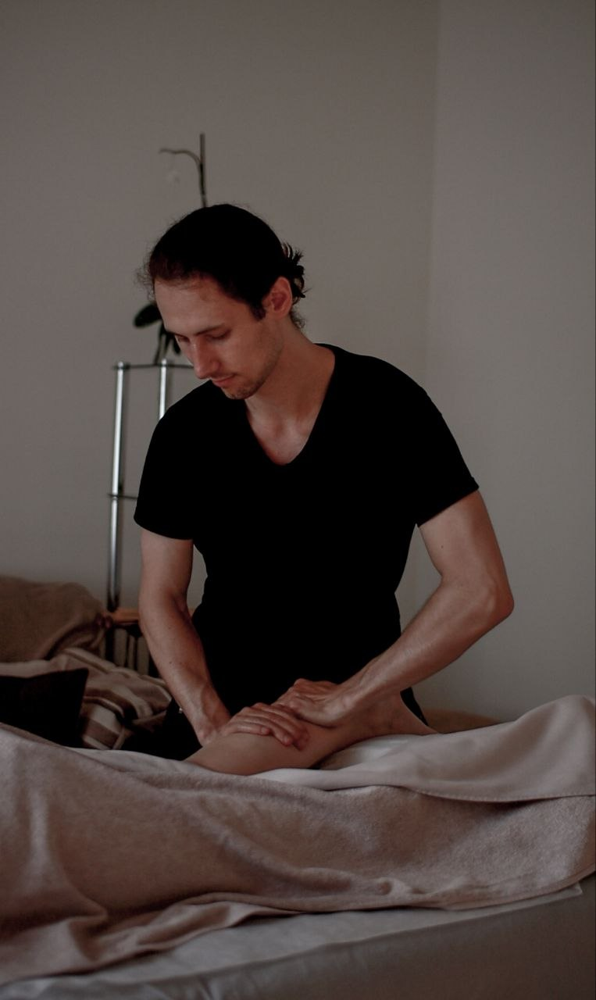

Главная · Спортивный массаж
Массаж в Риге · студия и выездВосстановление мышц после тренировок и нагрузок: снимаем забитость, спазмы и «тяжесть», возвращаем подвижность. Приём в студии FIFTY или выезд к вам. Первый визит — €30.
Подходит не только спортсменам. Это восстановительная работа с мышцами после любой нагрузки — тренировок, физической работы, долгих смен на ногах.
Начинаем с короткого разговора: какая была нагрузка, что беспокоит, есть ли травмы и противопоказания. Дальше подбираем интенсивность и работаем по проблемным зонам — силу и темп регулируем под вас прямо в процессе. В конце — пара рекомендаций по восстановлению.
Принимаю в студии FIFTY в Риге, либо приезжаю со своим массажным столом и оборудованием к вам — домой, в отель или офис. Что удобнее — обсудим в WhatsApp.
Первый визит в студию — €30 (обычно €50) на массаж длительностью до 60 минут. Актуальный прайс и PDF-меню пришлю в WhatsApp за пару минут.
Черновик текста — финальные формулировки согласуем с Максимом.
Обычно через несколько часов или на следующий день. Перед сеансом расскажите о нагрузке и самочувствии — подберём интенсивность.
Работаем в комфортном для вас диапазоне. Проработка забитых мышц бывает ощутимой, но силу и темп регулируем под вас.
Да, выезжаю со своим столом и оборудованием по Риге — домой, в отель или офис.
Другие услуги: массаж спины и шеи · массаж с выездом · все услуги